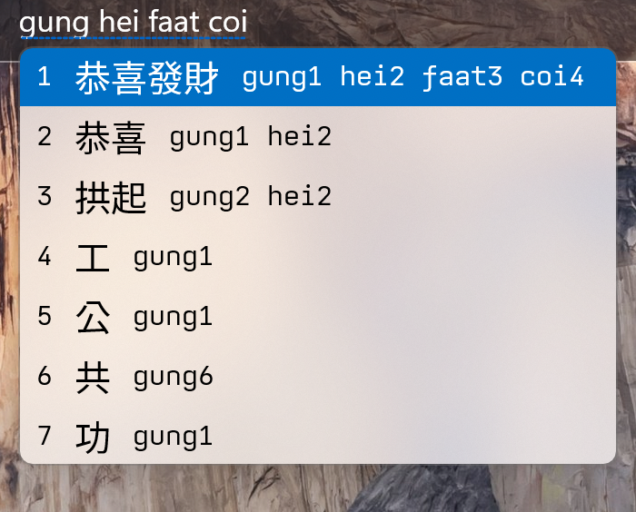

兼容系統: Windows 11 以及 Windows 10 (64-bit)
兼容CPU: x86_64 arm64
下載一般電腦版: jyutping-v0.2.0-x64.exe
下載ARM電腦版: jyutping-v0.2.0-arm64.exe
# Bytes
27561085 jyutping-v0.2.0-x64.exe
27544913 jyutping-v0.2.0-arm64.exe
# SHA-256
779578e5a195f26b9b11d8a60af89ed704b2afa5d4618b91ced2e1dbee728f7e jyutping-v0.2.0-x64.exe
618ced78f6a6cd9393f15b36dfa8fb3c7a3d413697750d1d8f2357987ffd91cc jyutping-v0.2.0-arm64.exe
| 快捷鍵 | 模式以及字形 |
|---|---|
| Shift | 切換中文／ABC 模式。 |
| Shift + Space | 切換全寬／半寬數字、字母。 |
| Ctrl + . | 切換中文／英文標點符號。 |
| Ctrl + Shift + 1 | 切換至傳統漢字。 |
| Ctrl + Shift + 2 | 切換至傳統漢字 • 香港標準。 |
| Ctrl + Shift + 3 | 切換至傳統漢字 • 臺灣標準。 |
| Ctrl + Shift + 4 | 切換至簡化字。 |
| 快捷鍵 | 候選詞以及輸入 |
|---|---|
| Arrow Up ↑ 或 Shift + Tab | 移至上一個候選詞。 |
| Arrow Down ↓ 或 Tab | 移至下一個候選詞。 |
| - 或 [ 或 Arrow Left ← | 上一䈎候選詞。 |
| = 或 ] 或 Arrow Right → | 下一䈎候選詞。 |
| Esc | 取消目前候選輸入。 |
| Ctrl + Shift + Backspace | 從輸入記憶移除當前候選詞。 |
粵拼輸入法會用到好多冇咁常見嘅字詞，而電腦自帶字體可能顯示不全或不佳。
推薦安裝以下 全部 幾款字體：
Inter
尙古黑體
遍黑體
MiSans L3
雙擊 C:\Program Files\Jyutping\unins000.exe 即開始卸載。
如果卸載過程中，彈提示話無法關閉某個程式。
可以試下：
先將輸入法切換到系統輸入法，再登出、登入一次電腦（或者重啓），然後再開始卸載。
如果你想支持作者開發，歡迎 捐贈贊助